Let  be holomorphic on a connected open
be holomorphic on a connected open  , not identically
zero, and
, not identically
zero, and
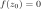
. Then there are a unique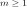
, the order of the zero, and a holomorphic with
with 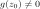
and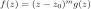
near . In particular the zeros of
are isolated.
. In particular the zeros of
are isolated.
Expand
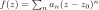
near. Not all
 vanish: the set where every derivative of vanishes is
open – there is identically zero on a disc – and closed, being
an intersection of zero sets of continuous functions, so by connectedness
it is empty or all of , and the latter is excluded.
vanish: the set where every derivative of vanishes is
open – there is identically zero on a disc – and closed, being
an intersection of zero sets of continuous functions, so by connectedness
it is empty or all of , and the latter is excluded.
Let  be least with
be least with
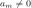
, which is at least since
since
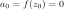
. Then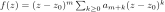
, and the second factor is a convergent power series, hence holomorphic, with value at. By continuity it is non-zero on a
neighbourhood, on which is the only zero of .
Let
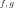
be holomorphic on a connected open and suppose they
agree on a set having an accumulation point in . Then  on
.
on
.
Apply the previous theorem to
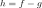
. If is not identically
zero its zeros are isolated, contradicting the existence of an
accumulation point of zeros inside . Hence
is not identically
zero its zeros are isolated, contradicting the existence of an
accumulation point of zeros inside . Hence 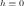
.
If is holomorphic on a neighbourhood of  then
then
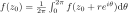
: the value at the centre is the average over the circle.Put
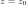
in the Cauchy integral formula and parametrise the circle by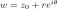
, so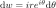
and ; the factors cancel, leaving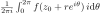
.
Let be holomorphic on a connected open . If  attains a local maximum at a point of , then is constant.
Consequently, if is bounded and extends continuously to
attains a local maximum at a point of , then is constant.
Consequently, if is bounded and extends continuously to
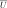
, then attains its maximum on the boundary.
Suppose
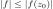
on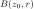
. By the mean value property, for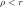
,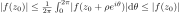
. So the continuous non-negative function has zero integral and therefore vanishes identically: is constant on
every such circle, hence on the disc.
A holomorphic function of constant modulus on a disc is constant: if the
constant is  this is clear; otherwise
this is clear; otherwise
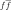
is constant, so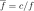
is holomorphic, and a function whose conjugate is also holomorphic has vanishing derivative by the Cauchy-Riemann equations, hence is constant. By the identity theorem is constant on all of .
For the last claim, is continuous on the compact
, so it attains a maximum; if the maximum were at an
interior point, would be constant and the maximum would also be
attained on the boundary.
The identity theorem is what makes analytic continuation well posed: there is at most one holomorphic extension of a function to a larger connected set, so "the" continuation of a series beyond its disc of convergence is a legitimate phrase. It also forbids bump functions – a holomorphic function vanishing on an open subset of a connected domain vanishes identically – which is why the constructions of real analysis that rely on cutting off have no complex analogue.